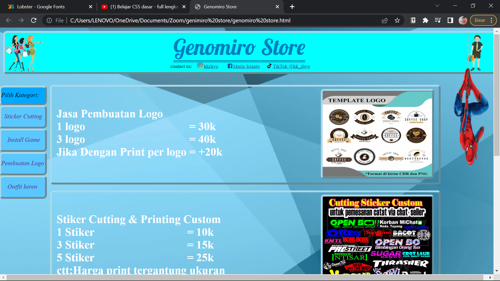
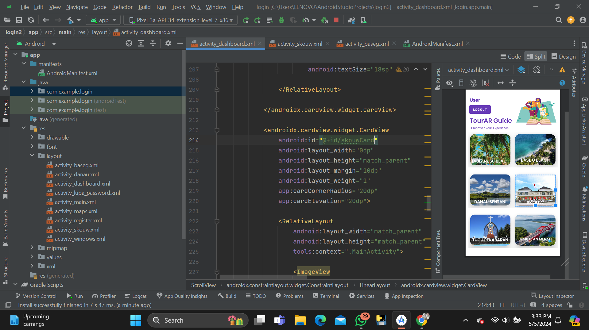
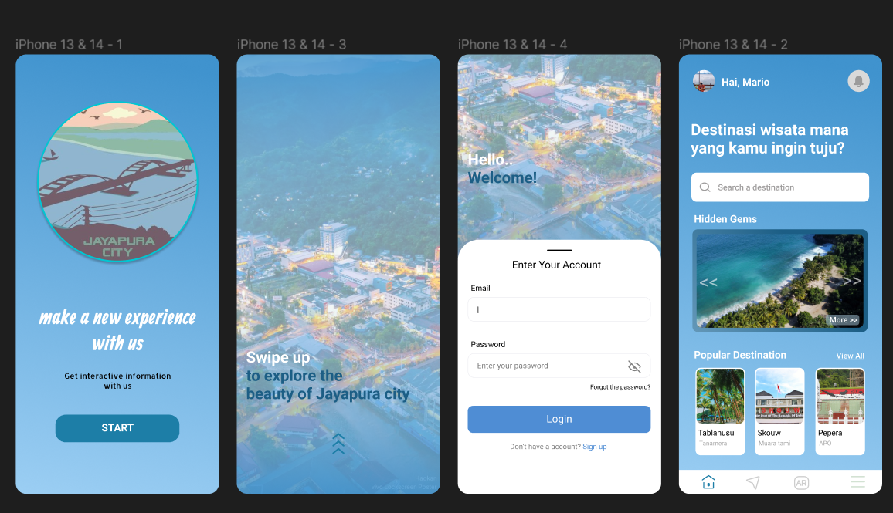
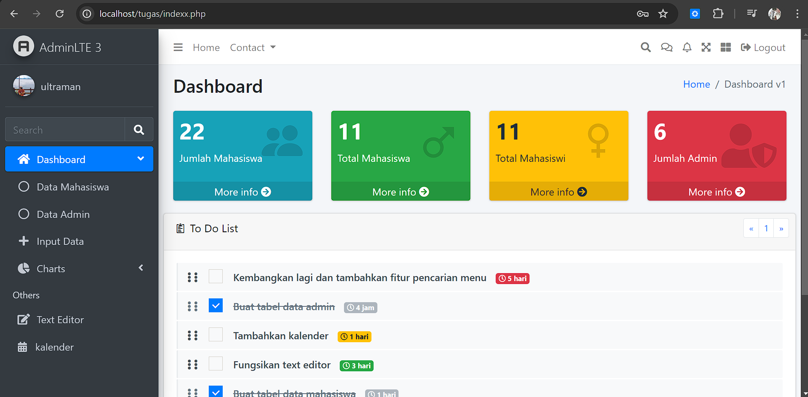
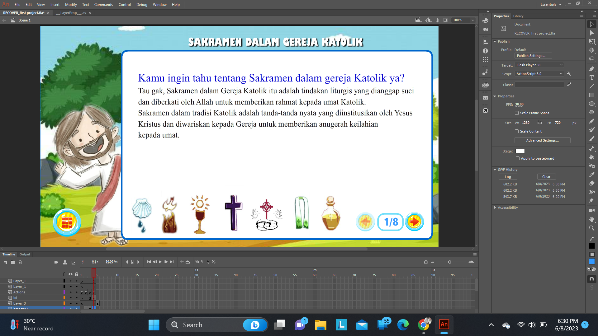
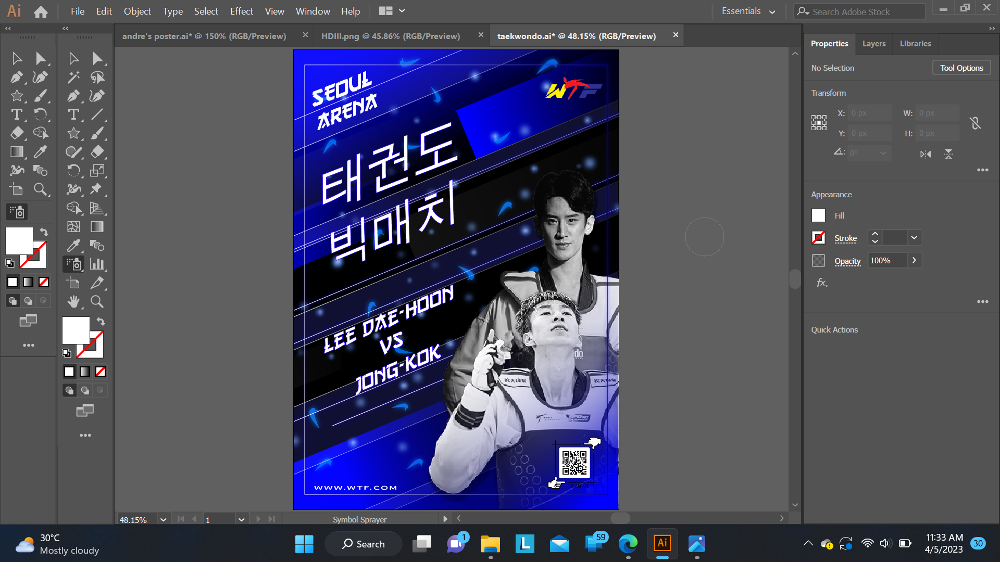
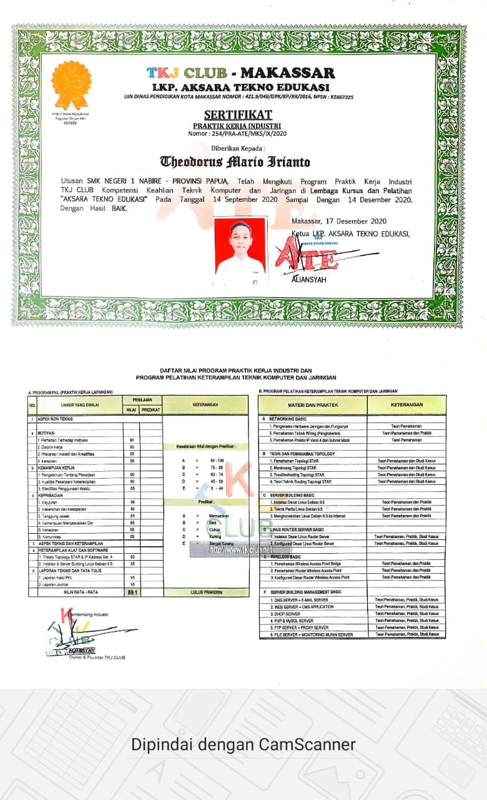
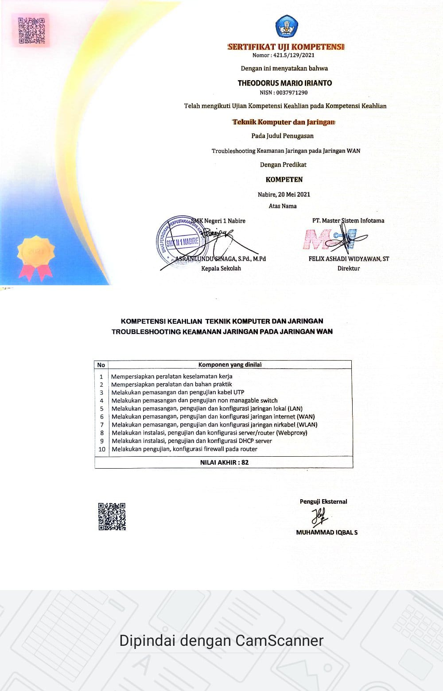

Latest Projects and Certificate

Web Developer
Halaman website jualan stiker

App Development
Aplikasi Pemandu Wisata dengan Augmented Reality

UI/UX Project
UI dari aplikasi wisata dikota Jayapura

Web Development Project
Membuat website menggunakan adminLTE

EduTech development Project
Mengembangkan aplikasi pembelajaran religi

Design brosur produk
Mendesain brosur untuk penjualan produk

EduTech Development Project
Mengembangkan aplikasi pembelajaran Planet

Design Poster
Poster Pertandingan Taekwondo

Prakerin online Tkj club Makassar
Program pelatihan keterampilan Teknik Komputer dan Jaringan

Uji Kompetensi Keahlian
Trouble shooting keamanan jaringan WAN